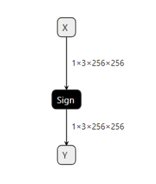
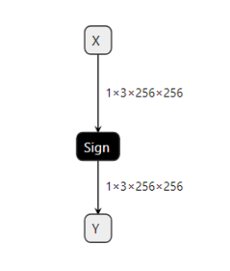

Safety SignPlugin benchmark
 VS
VS
Support input type float and half
Output corresponding type
Precision 100%
Percision
arrarysize=196608+--------------------+---------+| Compare Status | Success |+--------------------+---------+| Total diff num | 0 || > 10E-1 percentage | 0.000 % || > 10E-2 percentage | 0.000 % || > 10E-3 percentage | 0.000 % || > 10E-4 percentage | 0.000 % || > 10E-5 percentage | 0.000 % || > 10E-6 percentage | 0.000 % |+--------------------+---------+Performance:
Latency
//Safety# ./safe_plugin_infer --loadEngine=plugin.eng&&&& RUNNING TensorRT.sample_safe_plugin_infer [TensorRT v8610] # ./safe_plugin_infer --loadEngine=plugin.enginput tensor size = {1x3x256x256x}doInference : 345 inputvol: 196608, outputvol: 196608iterators: 4824, total time: 42.3084 msec, Time= 0.009 msec&&&& PASSED TensorRT.sample_safe_plugin_infer [TensorRT v8610] # ./safe_plugin_infer --loadEngine=plugin.eng[01/02/1970-06:28:32] [I] === Profile (45561 iterations ) ===[01/02/1970-06:28:32] [I] Layer Time (ms) Avg. Time (ms) Median Time (ms) Time %[01/02/1970-06:28:32] [I] {ForeignNode[node_of_Y]} 345.25 0.0076 0.0075 100.0[01/02/1970-06:28:32] [I] Total 345.25 0.0076 0.0075 100.0[01/02/1970-06:28:32] [I]&&&& PASSED TensorRT.trtexec [TensorRT v8610] # ../trtexec --onnx=sg_std.onnx --loadInputs=X:input.tensor --exportOutput=trtexec_output.json --dumpProfile|
|
Average latency |
|
Standard |
0.0076 |
|
Safety |
0.009 |